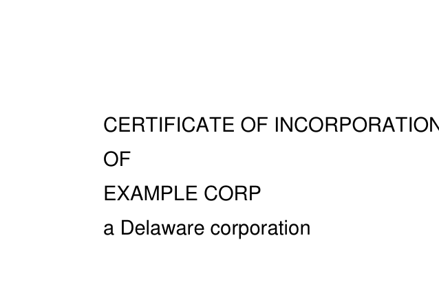

from fastcore.test import *core
Read, search, and visually preview PDFs with
fitz (PyMuPDF)
fastfitz is a small ergonomic layer over PyMuPDF for working with PDFs interactively – in Jupyter, solveit, or an AI-driven kernel. The design rule: reach for text first (cheap, precise), and for pixels only when layout matters. When you do need pixels, previews should be searchable and croppable so you render just the region you care about, not whole pages.
Note that PyMuPDF is AGPL-3.0 licensed, and therefore so is fastfitz.
A sample document
We build a small two-page PDF right here, so the demos below are deterministic and self-contained.
smpl = fitz.open()
for lines in (['CERTIFICATE OF INCORPORATION','OF','EXAMPLE CORP','a Delaware corporation'],
['ARTICLE ONE','The name of the corporation is','Example Corp']):
pg = smpl.new_page()
for j,l in enumerate(lines): pg.insert_text((72, 92+24*j), l, fontsize=14)
pg0 = smpl[0]Text
Most questions about a PDF are answered by its text. Document.text gives the whole document (or chosen pages) in one string, with page markers so line references stay grounded.
Document.text
def text(
pages:NoneType=None
)->str:Plain text of pages (default: all), with --- page N --- separators
t = smpl.text()
assert 'CERTIFICATE OF INCORPORATION' in t and '--- page 1 ---' in t
assert 'ARTICLE ONE' not in smpl.text(pages=[0])
print(t)--- page 0 ---
CERTIFICATE OF INCORPORATION
OF
EXAMPLE CORP
a Delaware corporation
--- page 1 ---
ARTICLE ONE
The name of the corporation is
Example CorpSearch
Page.search_for returns the rects where a string appears; we lift it to the document level, returning (page, rects) pairs for pages with hits. The rects are the bridge between text and pixels: find something textually, then render exactly where it lives.
Document.search_for
def search_for(
q
)->list:(page, rects) for each page where q matches; pages without hits are dropped
hits = smpl.search_for('corporation')
test_eq([p.number for p,_ in hits], [0, 1])
test_eq(smpl.search_for('nonexistent'), [])
hits[(page 0 of <None, doc# 1>,
[Rect(205.0139923095703, 76.94999694824219, 309.2439880371094, 96.18599700927734),
Rect(146.6900177001953, 148.9499969482422, 216.71800231933594, 168.18600463867188)]),
(page 1 of <None, doc# 1>,
[Rect(177.83999633789062, 100.94999694824219, 247.86798095703125, 120.18599700927734)])]Preview
Page.preview renders to a PNG Image in three modes: the whole page, a clip rect, or – the interesting one – the union of the rects matching a query q. Since search_for returns one rect per line, the union spans line breaks, so a match that wraps still comes back as one readable crop.
The default dpi=150 puts a US Letter page at ~1650px on the long edge: comfortably readable for vision models while staying cheap. Drop it lower for thumbnails, raise it for fine print.
Page.preview
def preview(
q:NoneType=None, clip:NoneType=None, dpi:int=150
):Render as a PNG Image: the whole page, a clip rect, or the union of rects matching q
assert pg0.preview().data[:8] == b'\x89PNG\r\n\x1a\n'
test_fail(lambda: pg0.preview('missing text'), contains='not found')
pg0.preview()The query mode crops to just the matched region:
pg0.preview('CERTIFICATE OF INCORPORATION')…and an explicit clip renders any rect you like:
pg0.preview(clip=fitz.Rect(0, 0, 306, 200))
Pages display themselves
With a _repr_png_, a bare Page expression renders visually in any rich frontend.
assert pg0._repr_png_()[:8] == b'\x89PNG\r\n\x1a\n'
pg0
The idioms compose: search the document, preview the hit.
p,_ = smpl.search_for('Delaware')[0]
p.preview('Delaware')